учебник
Алгебра и начала математического анализа · 11
Алимов Ш. А. и др.
Полный обзор программы 11 класса: алгебра и начала анализа, тригонометрия, стереометрия, теория вероятностей. Структура ЕГЭ профильного и базового уровней, разборы заданий, классические учебники.

Профильный ЕГЭ-2026 по математике состоит из двух частей: 12 заданий с кратким ответом и 7 заданий с развёрнутым решением. Максимум — 31 первичный балл. С 2026 года добавлено задание №2 на векторы, задание №14 (стереометрия) стало стоить 3 балла, а №16 (экономика) — 2 балла.
12 заданий базового и повышенного уровня. Планиметрия, окружности, вероятности, текстовые задачи, исследование функций, графики, простейшие уравнения и неравенства, стереометрия.
7 заданий повышенного и высокого уровня сложности. Тригонометрия, стереометрия, неравенства, экономическая задача, планиметрия, параметр и теория чисел.
На работу — 235 минут. Можно использовать линейку, справочные материалы. Калькулятор запрещён. Минимум для вуза — обычно 39 тестовых баллов.
Простейшая планиметрия: площади, углы, длины на клетчатой бумаге. Знание формул площадей треугольника, параллелограмма, трапеции, круга.
Действия с векторами: координаты, длина, сложение, скалярное произведение, угол между векторами. Векторы заданы на координатной плоскости или в стереометрии.
Объёмы и площади поверхностей стандартных тел: призма, пирамида, цилиндр, конус, шар. Подобие тел, отношение объёмов.
Классическое определение вероятности: число благоприятных исходов к числу всех. Подсчёт исходов перебором, через комбинаторику.
Сложные вероятностные задачи: сумма и произведение событий, условная вероятность, формула полной вероятности, формула Байеса.
Рациональные, иррациональные, показательные, логарифмические, тригонометрические уравнения. Сводимое к простейшему за один шаг.
Вычислить значение алгебраического, логарифмического, тригонометрического выражения. Использовать тождества, свойства степеней и логарифмов.
Определить характеристики функции по графику её производной и наоборот. Касательная к графику, экстремумы, монотонность.
Физическая или прикладная формула: подставить значения и решить уравнение/неравенство. Часто — на механику, оптику, термодинамику, проценты.
Задачи на движение, работу, концентрации, сплавы, проценты. Сводятся к составлению уравнения с одной или двумя переменными.
По графику функции — найти область значений, асимптоты, нули, точки разрыва, чётность, периодичность. Параболы, дробно-линейные, тригонометрические функции.
Найти максимум или минимум функции на отрезке (или на всей области определения) с помощью производной.
Две подзадачи: а) решить уравнение; б) найти корни, принадлежащие отрезку. Отбор корней через единичную окружность или метод неравенств.
Куб, призма, пирамида, цилиндр, конус, шар. Доказательство свойства + вычисление: угол между прямой и плоскостью, расстояние от точки до плоскости, площадь сечения. Координатно-векторный или геометрический методы.
Показательное, логарифмическое неравенство или система. Метод рационализации, замена переменной, метод интервалов.
Кредиты (аннуитетные и дифференцированные платежи), вклады, оптимизация. Работа с процентами и геометрической прогрессией.
Окружности, четырёхугольники, треугольники. Доказательство свойства + вычисление длин, площадей. Подобие, теоремы синусов/косинусов, свойства касательных и хорд, вписанные/описанные окружности.
Уравнение или неравенство с параметром. Графический метод, метод областей, исследование функции. Самая «творческая» задача варианта — высокий уровень сложности.
Делимость, остатки, простые числа, перечисление вариантов. Часто — оценка + пример: доказать невозможность или построить конструкцию. Высокий уровень сложности.
Источник структуры: демоверсия ФИПИ-2026. Сумма первичных баллов: 12×1 + 2 + 2 + 3 + 2 + 2 + 3 + 4 + 4 = 31.
Программа выпускного класса — это в основном завершение начал математического анализа и стереометрия.
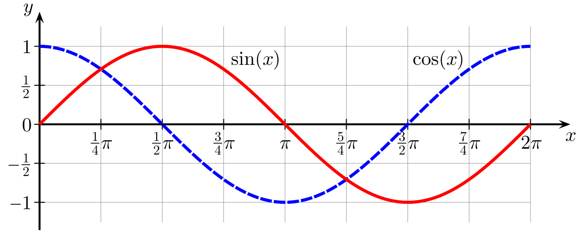
Тригонометрический круг, формулы приведения, основные тождества, формулы суммы/разности и двойного аргумента. Уравнения, неравенства, обратные тригонометрические функции.
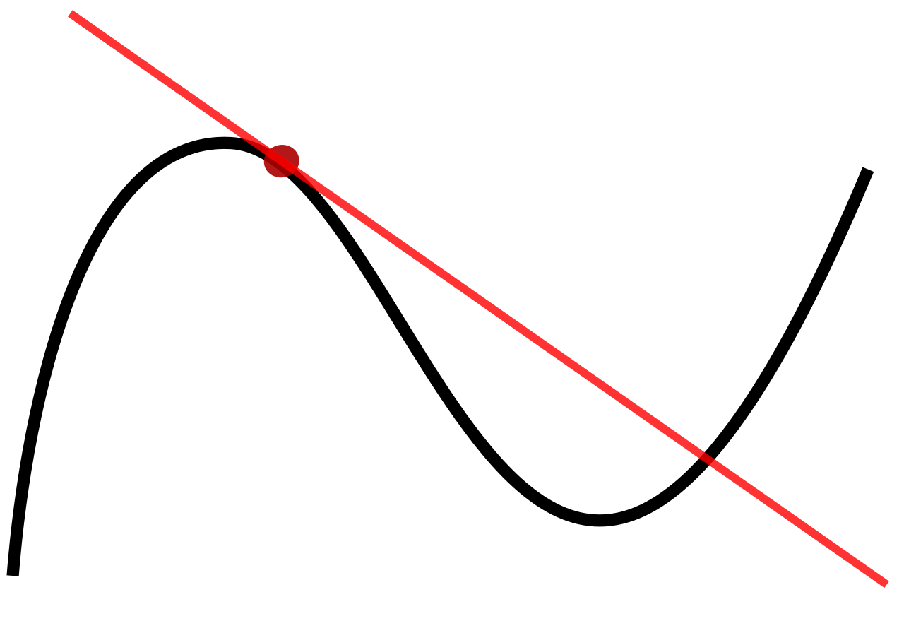
Определение производной, таблица производных, правила дифференцирования. Касательная к графику, исследование функций на монотонность и экстремумы, поиск наибольших и наименьших значений.
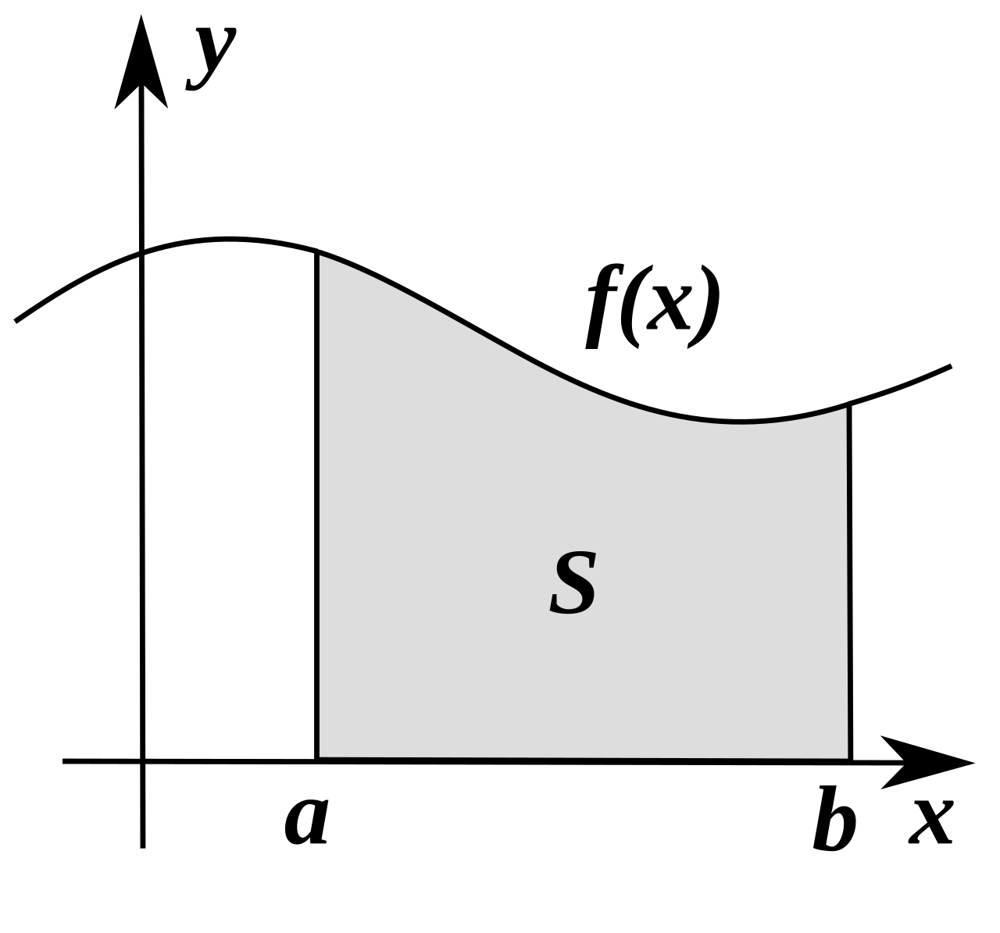
Определение первообразной, неопределённый интеграл, формула Ньютона–Лейбница, площадь криволинейной трапеции. Применение к физическим задачам.
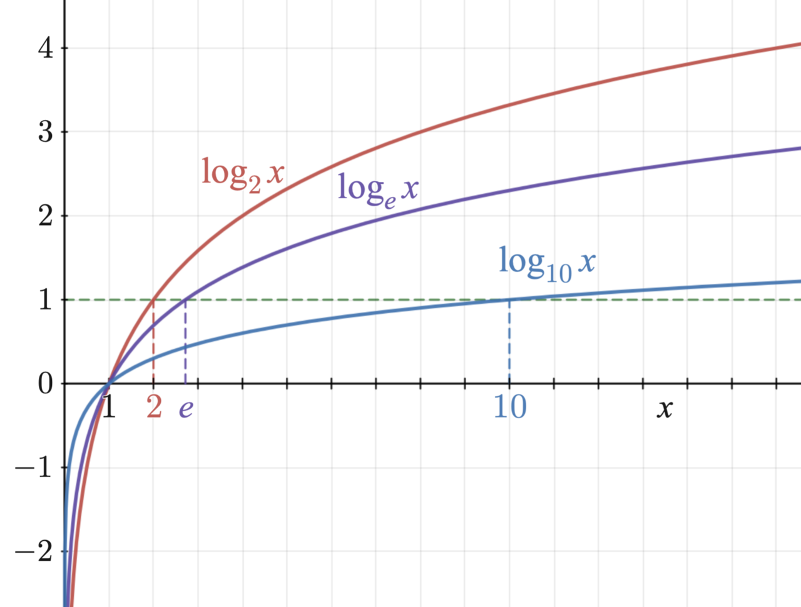
Свойства степени с действительным показателем, логарифмы. Графики, уравнения и неравенства. Натуральный логарифм. Связь с производной.
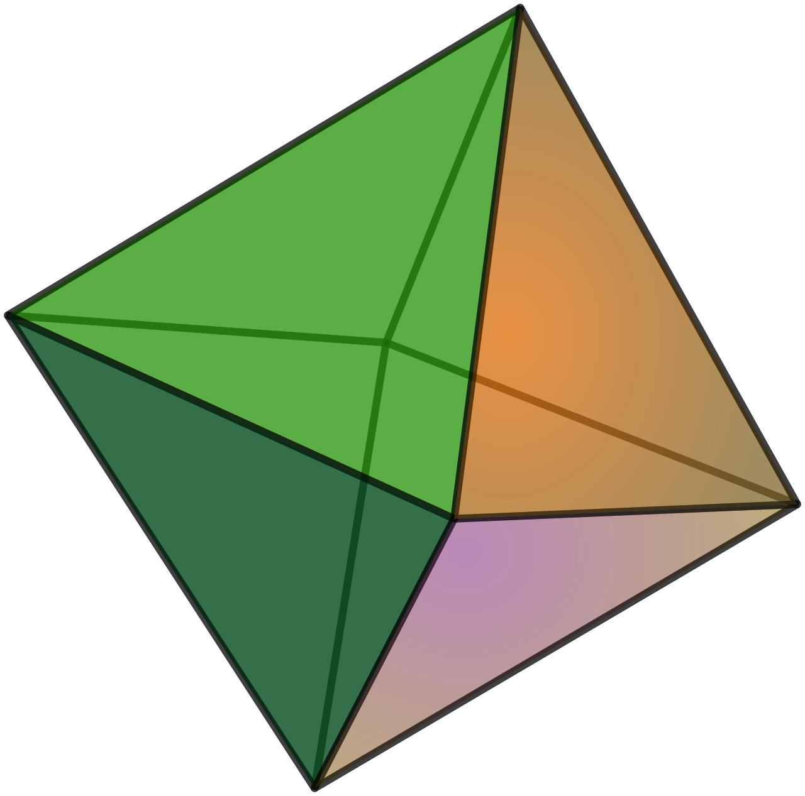
Многогранники (призма, пирамида, параллелепипед), тела вращения (цилиндр, конус, шар). Объёмы и поверхности. Координатно-векторный метод как универсальный инструмент.
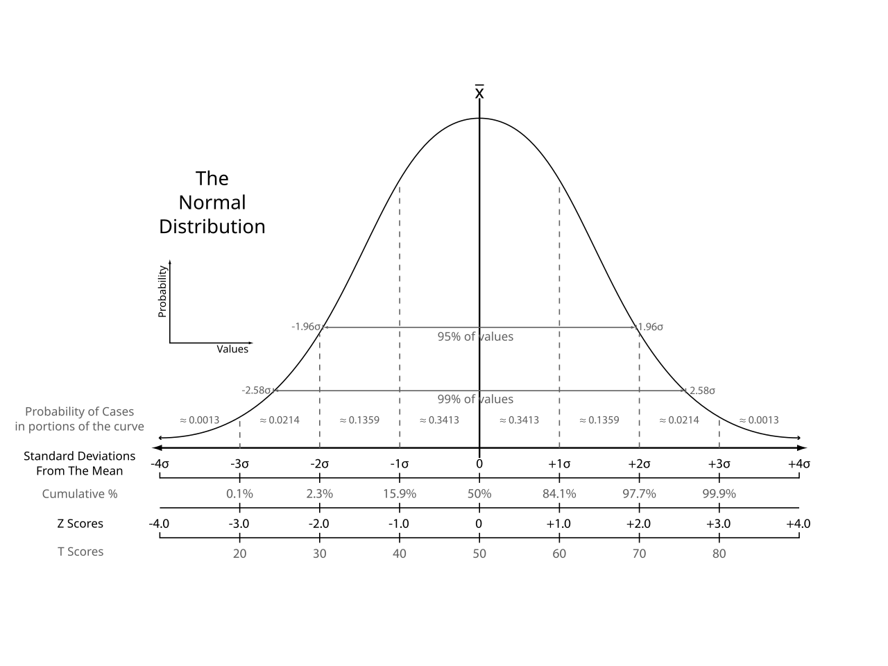
Классическое и геометрическое определение вероятности. События и операции над ними. Условная вероятность, формула полной вероятности, формула Байеса. Случайные величины.
Несколько характерных задач из реальных вариантов разных лет — чтобы увидеть формат и логику разбора.
В кармане 3 красных и 5 синих шарика. Наугад вытаскивают два шарика подряд без возвращения. Найдите вероятность того, что оба шарика — красные.
а) Решите уравнение: 2\sin^2 x + 3\cos x - 3 = 0.
б) Найдите все корни на отрезке \left[-\pi;\,\tfrac{\pi}{2}\right].
Решите неравенство: \log_{x-1}(x+2) \geq 1.
15 января взят кредит на 4 года под 25% годовых. Условия:
Какую сумму нужно взять, чтобы общая выплата составила 8,5 млн руб?
Найдите все значения a, при которых уравнение x^2 - 2ax + a^2 - 4 = 0 имеет корни, по модулю не превосходящие 3.
Эти книги — школьный канон, по которым работают сильные учителя и репетиторы.
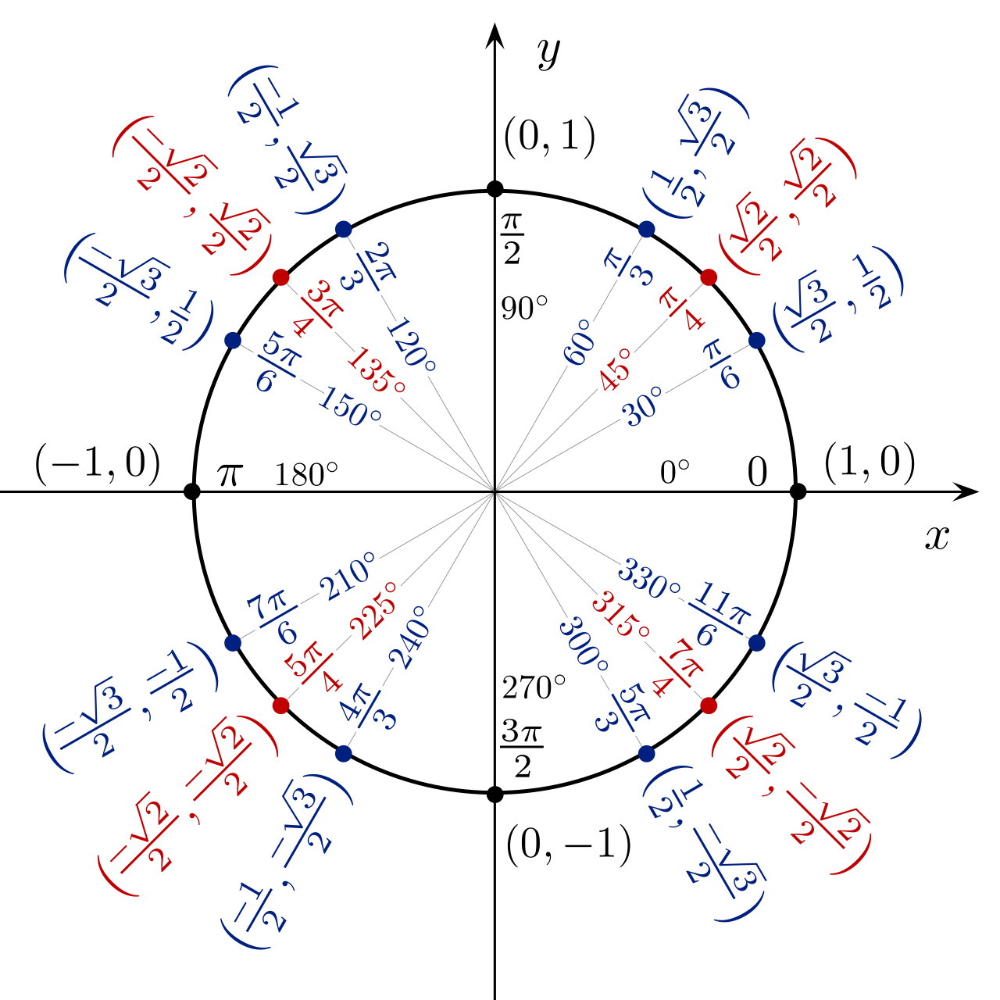
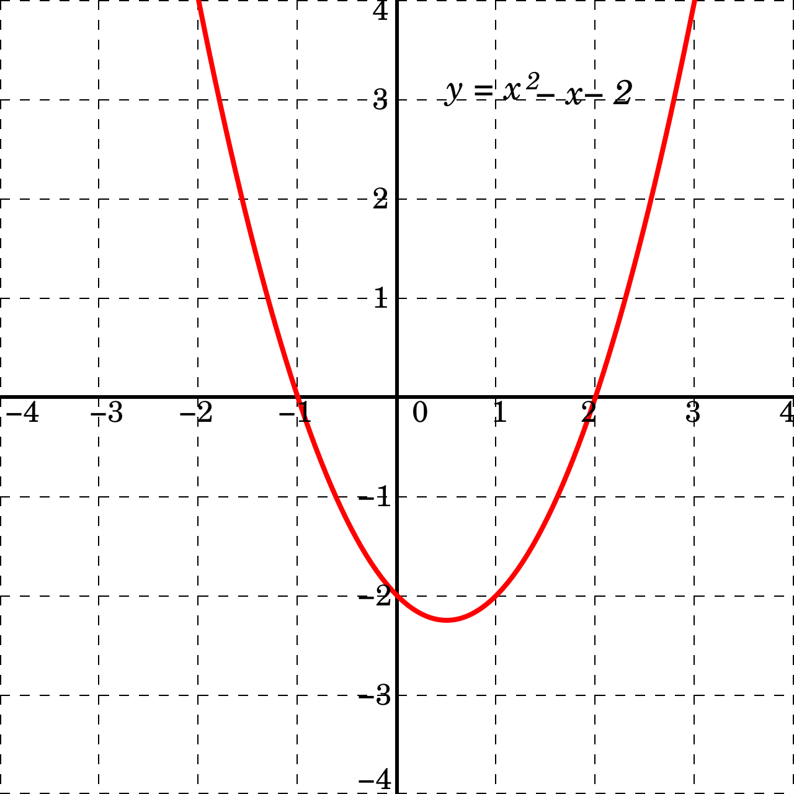
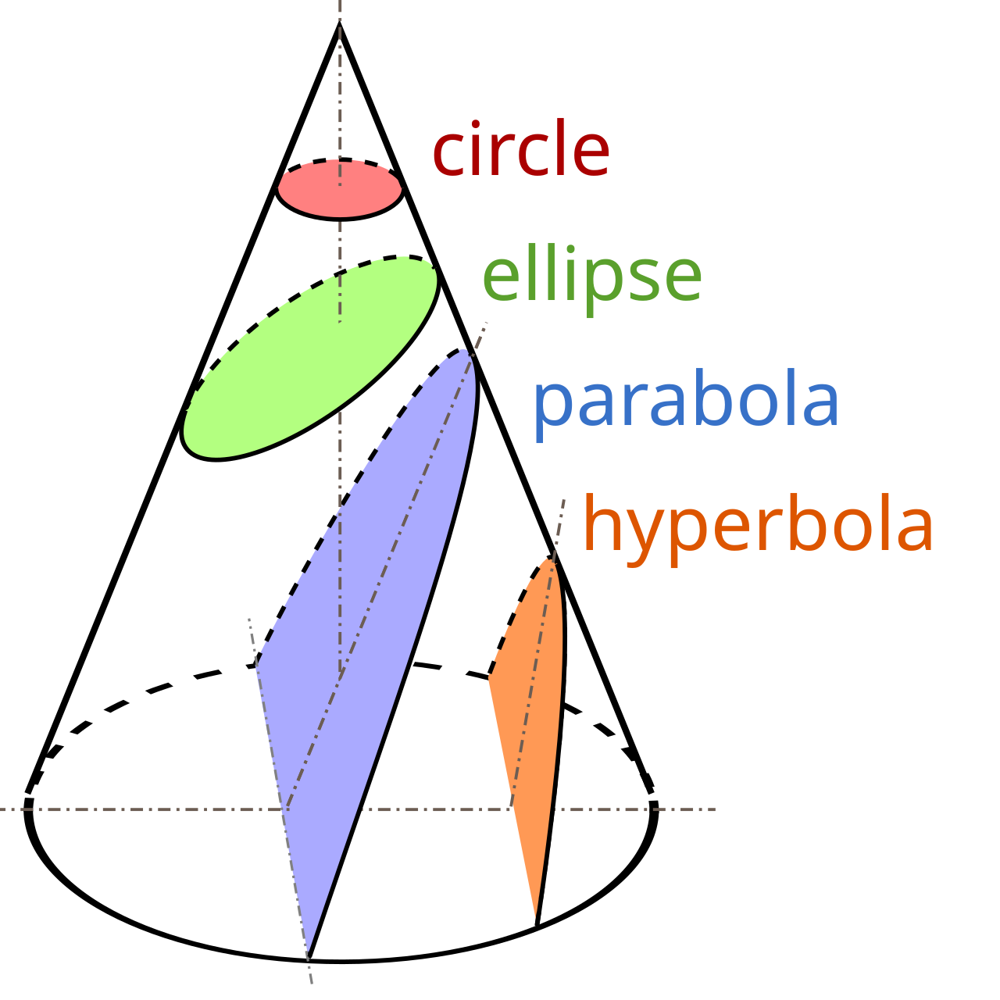
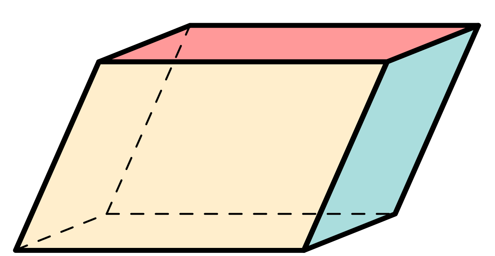
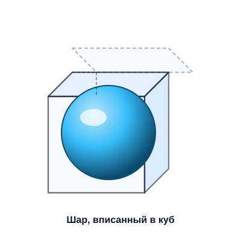
Гарантированно решайте задания 1–12 — это половина первичного балла. Тренируйтесь до автоматизма: одна и та же арифметическая ошибка стоит балла.
Один разобранный вариант с пониманием полезнее десяти прорешанных «в пустоту». Каждое непонятое место — повод изучить тему заново.
За месяц до экзамена — не меньше одного полного варианта на 3 ч 55 мин в неделю. Учит распределять силы и контролировать время.
Официальные демоверсии, спецификация, кодификатор и открытый банк прототипов всех заданий ЕГЭ.
fipi.ruСайт И. В. Ященко — тренажёры, статистика по типовым задачам, расширенные сборники.
mathege.ruСамый большой бесплатный тренажёр: тысячи задач, фильтры по темам, автопроверка коротких ответов.
ege.sdamgia.ruКурсы и теория с пояснениями для каждого задания. Большой раздел задач с параметром.
shkolkovo.net